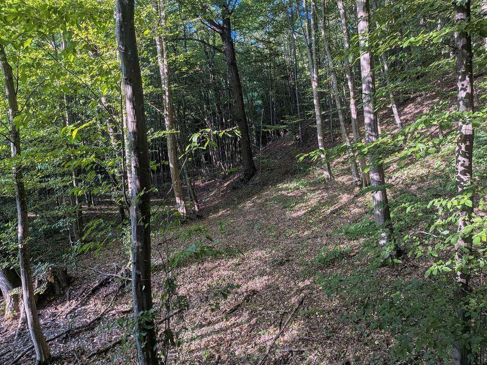
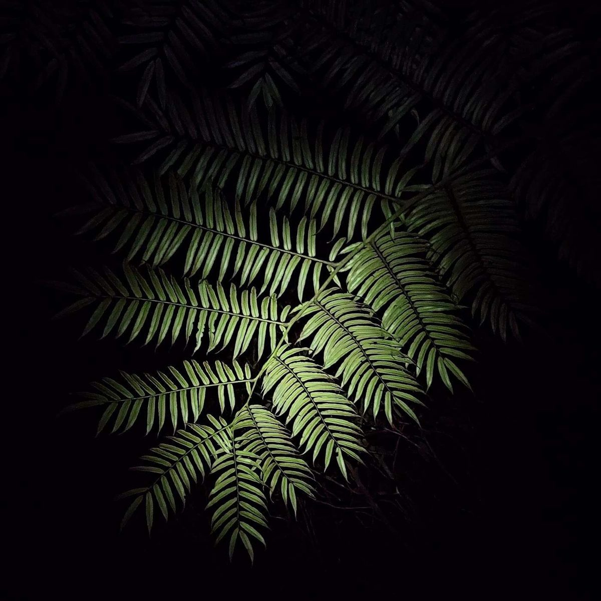
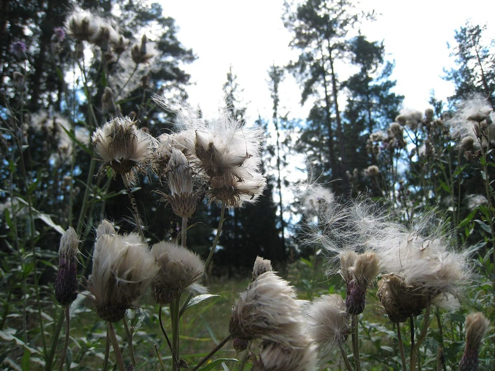
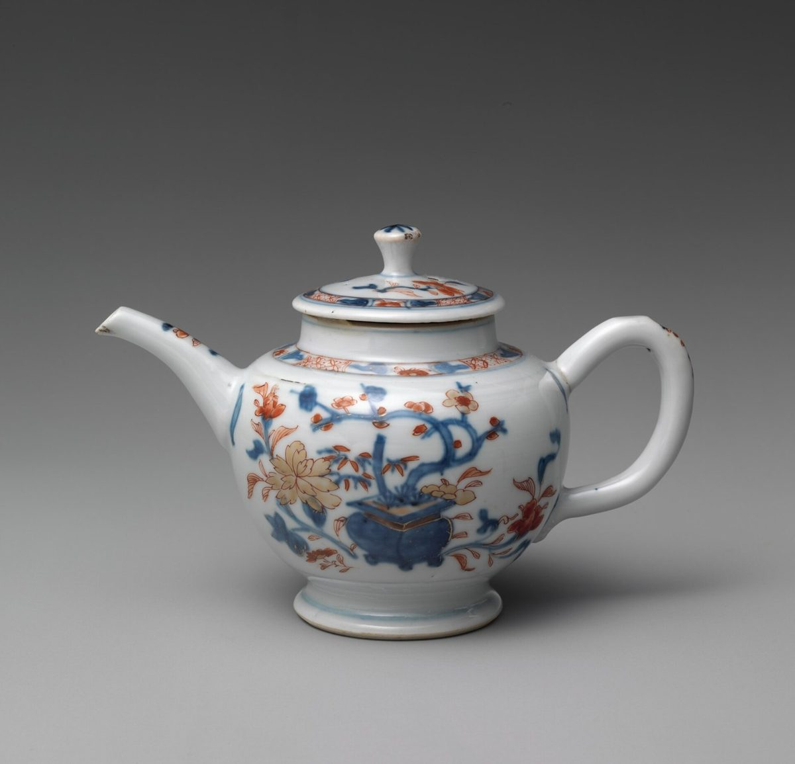

ABOUT
お店のこと
bouffeeは、土岐市の大通りから少し入った、森のなかのような場所にあるカフェです。2025年2月、名古屋で「roti cafe」として続けてきたお店が、建物の取り壊しをきっかけに土岐市へ移って開きました。
店内は椅子やテーブル、小物にいたるまでアンティークで揃えられ、静かな音楽が流れます。そばには小川があり、テラス席や愛犬と過ごせる席(予約制)もあるそうです。席数は多くなく、ご予約はInstagramから受け付けているとのことです。
※店名の意味は確認できていません。上記は公開されている紹介記事・SNS投稿に基づきます。




MENU
メニュー
ランチとケーキ、ドリンクをいただけると紹介されています。内容は日によって変わる可能性があるため、詳細はお店にご確認ください。



VOICE
口コミイメージ例
以下は制作側が作成したイメージで、実在のお客様の声ではありません。
イメージ例
木々に囲まれた道を進んだ先に、ほっとできる空間がありました。ゆっくり過ごせそうです。
イメージ例
アンティークの家具や食器を眺めながら、ケーキと飲み物でひと休みしたい、そんな場所です。
イメージ例
落ち着いた雰囲気で、友人とも一人でも静かな時間を楽しめそうだと感じました。